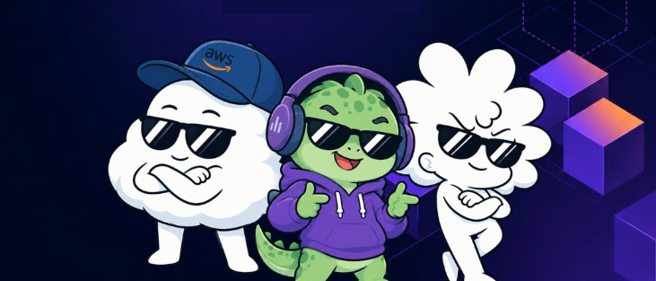
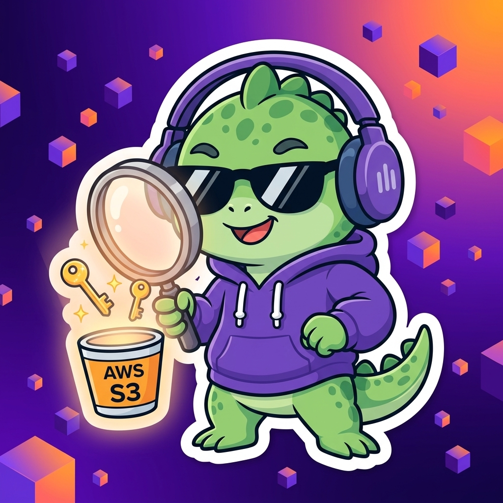
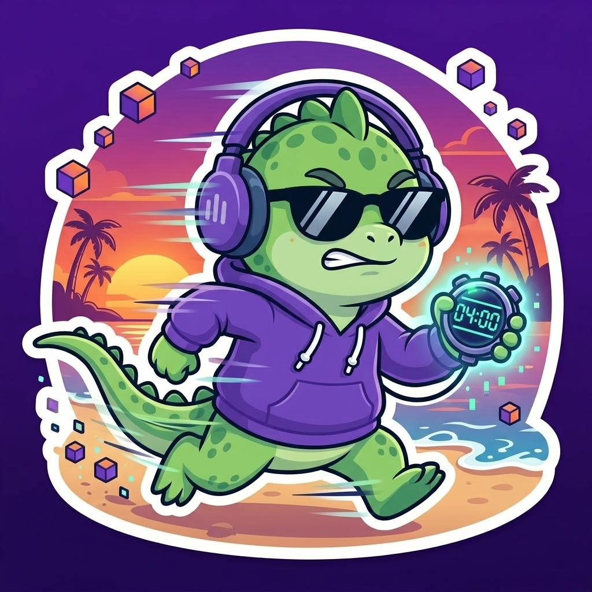
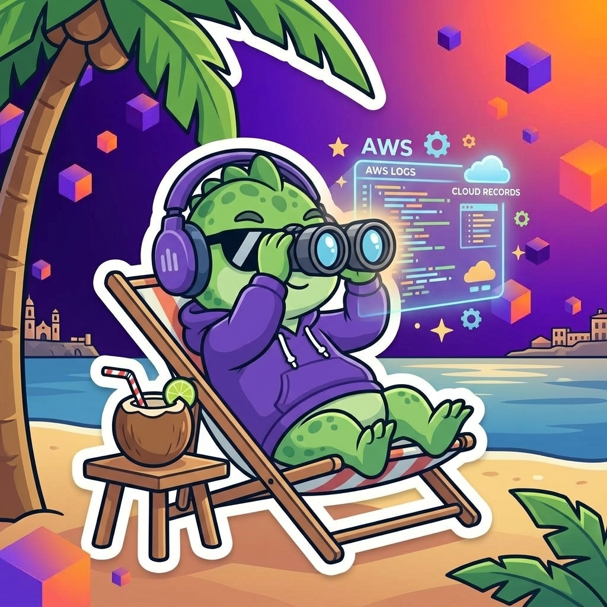
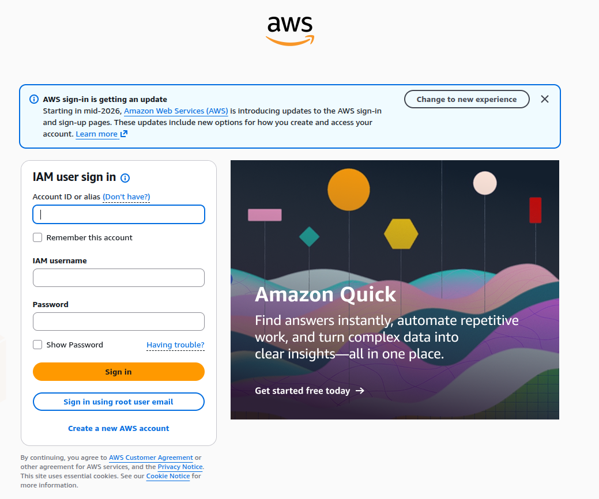
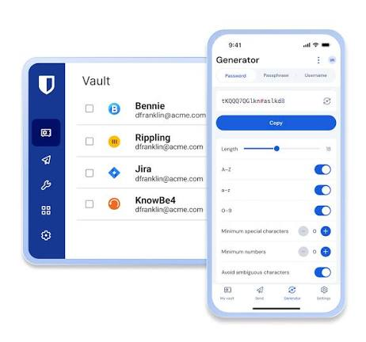
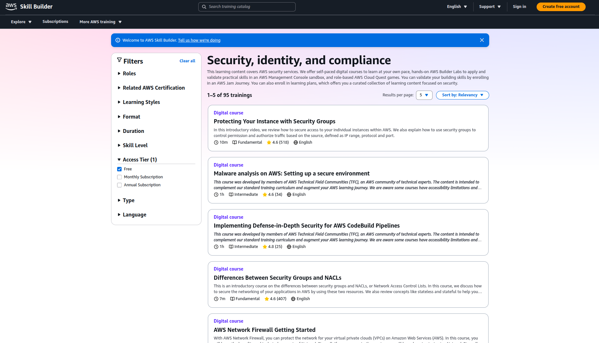
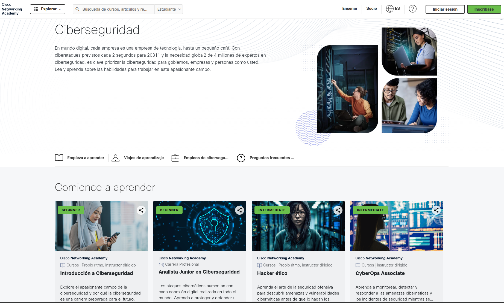
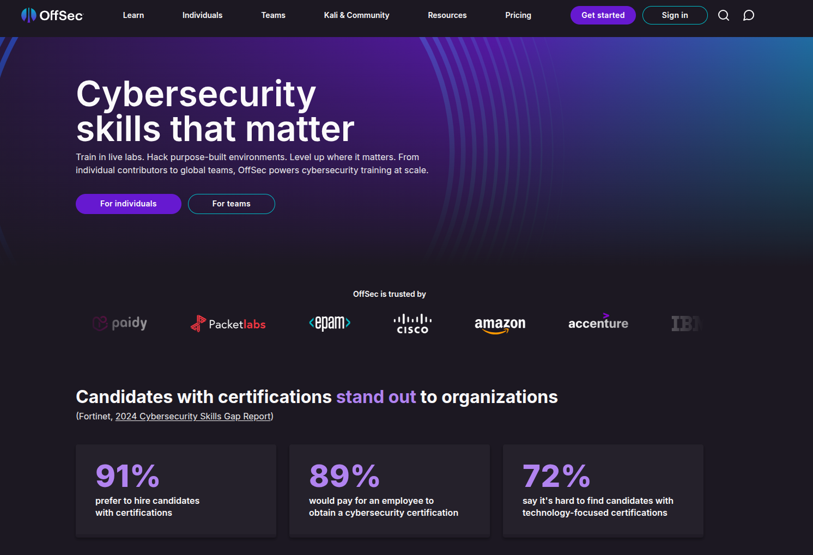

¿Tu Nube está Expuesta?
De la Mala Configuración a la Explotación: Anatomía de los Descuidos Más Típicos en AWS

El diseño oficial conmemorativo de Minatitlán para una sesión 100% práctica y comunitaria.
Roberto Flores Segundo
Aprender, Aplicar y Compartir: Construir en Comunidad
Aprender en el camino y compartir cada paso con la comunidad.
Impulsando la cultura cloud en la Cuenca del Papaloapan con talleres gratuitos y el programa "De Cero a Cloud" en estrecha hermandad con Minatitlán.
Seleccionado para asistir a re:Invent en Las Vegas y graduado de AWS re/Start. La oportunidad de conectar con otros builders y traer ese aprendizaje de vuelta a nuestra gente.
Experiencia en auditorías, políticas y control interno en la nube. Pasando de las matrices de riesgo en papel a ensuciarse las manos con código y laboratorios prácticos.
Plataforma que automatiza la respuesta a cuestionarios de clientes B2B y centraliza evidencias de ISO 27001 y SOC 1 para startups de LATAM sin pagar fortunas.
El Mensaje Clave: "Nadie empieza sabiéndolo todo. El verdadero valor de la tecnología surge cuando compartimos lo que aprendemos y construimos juntos en comunidad."
Ruta de Navegación Técnica
Un recorrido integral desde el reconocimiento inicial hasta el blindaje defensivo en AWS.
Reconocimiento & OSINT
Superficie real de ataque en México y LATAM. Desmitificación de atacantes, bots 24/7 y por qué Google Dorking no indexa todo S3.
Vectores de Ataque
OWASP Top 10 en la nube: S3 Buckets públicos, SSRF en aplicaciones EC2 y extracción de credenciales IAM desde IMDSv1.
Live Demo Lab
Demostración práctica en terminal: Fuga de datos sensibles, robo de tokens de sesión y movimiento lateral a servicios restringidos.
Blindaje Blue Team
Remediación con IMDSv2, S3 Block Public Access a nivel de cuenta, SSM Session Manager y rutas oficiales con badges gratuitos.
La Realidad de las Amenazas Cloud en México
Las malas configuraciones en la nube no son un riesgo teórico: son el vector #1 de monetización rápida.

México bajo Fuego Digital
- Concentra el 20% de todos los ciberataques de América Latina.
- Únicamente superado por Brasil en volumen de incidentes.
Por Descuido Humano
- 8 de cada 10 brechas cloud se originan por malas configuraciones.
- No requieren zero-days: basta una clave IAM en un repo o un S3 público.
Factura Sorpresa y Multas
- Clusters GPU levantados en minutos para minar criptomonedas.
- Sanciones de LFPDPPP / INAI por filtración de CFDIs, INE o datos personales.
Desmitificando al Atacante: ¿Quién Ataca Realmente la Nube?
Evidencia técnica verificada: bots 24/7 y descuidos cotidianos, no magia de Hollywood.
El Mito de Película (Hollywood)
FANTASÍAEl hacker solitario con sudadera en una habitación oscura, que escribe frenéticamente en terminal verde y pasa 6 meses analizando a tu empresa para entrar por un zero-day militar.
La Realidad Operativa (La Calle Digital)
HECHO REAL COMPROBADOBots y scanners automatizados en Go y Python ejecutándose 24/7. Escanean el espacio IPv4 de AWS y APIs públicas buscando descuidos cotidianos de 5 minutos mientras duermes.
Métricas de Oro: La Velocidad del Compromiso
En la nube, la ventana de oportunidad del defensor se mide en segundos, no en días.

Tiempo de Explotación
Tiempo récord documentado entre la subida accidental de un Access Key de AWS a GitHub y su uso por bots para desplegar clusters de criptominado.
Tiempo Medio de Detección
El Mean Time to Identify (MTTI) promedio de una brecha en infraestructuras sin monitoreo activo de eventos ni alarmas automatizadas.
Exposición Pública Accidental
Porcentaje de organizaciones que admitieron haber expuesto involuntariamente al menos un recurso de almacenamiento en la nube en el último año.
OSINT: ¿Por Qué Google Dorking No Indexa Todo S3?
Diferencia fundamental entre rastreo pasivo de buscadores y el descubrimiento activo mediante fuerza bruta de APIs.
Google Dorking en S3
Reconocimiento pasivo en fuentes públicas
La lección de indexación: Dorks arbitrarios como "facturacion" filetype:xml devuelven 0 resultados porque Google no adivina nombres. Pero al usar la estructura oficial del SAT ("cfdi" ext:xml), Google despliega de inmediato decenas de facturas reales indexadas de dependencias gubernamentales y empresas mexicanas en AWS S3.
Enumeración de la API: El Bucket del Lab
DESCUBRIMIENTO ACTIVO
¿Se crea o ya está puesto? En este laboratorio, al ejecutar ./redteam (o deploy.sh), CloudFormation crea automáticamente en tu cuenta de AWS el bucket vulnerable con políticas públicas y sube los archivos de muestra (factura SAT y base de datos).
OWASP Top 10 Reflejado en Arquitecturas Cloud
Las vulnerabilidades clásicas de aplicaciones web adoptan formas críticas cuando interactúan con servicios cloud.
Broken Access Control
Políticas de S3 con Principal: "*" y roles con AdministratorAccess sin restricción de recursos.
Security Misconfiguration
Mantener activo IMDSv1 en EC2, Security Groups con SSH al mundo (0.0.0.0/0) o sitios sin cabeceras HTTP.
SSRF en la Nube
Endpoints web que reciben URLs externas sin validar y hacen peticiones hacia la IP privada 169.254.169.254 (metadatos).
Anatomía de las Cabeceras de Seguridad HTTP
Las 5 directivas esenciales que cualquier desarrollador o builder debe configurar en su capa de entrega web.
Strict-Transport
Fuerza conexiones HTTPS exclusivas e impide ataques Man-in-the-Middle por degradación a HTTP simple.
Content-Security
Restringe de qué orígenes el navegador puede cargar scripts, estilos e imágenes, mitigando ataques XSS.
X-Content-Type
Impide que el navegador intente adivinar (sniff) el tipo de archivo, bloqueando ataques de tipo ejecutable.
X-Frame-Options
Evita que el sitio web sea incrustado dentro de un <iframe> en sitios maliciosos, neutralizando Clickjacking.
Referrer-Policy
Controla cuánta información de la URL de origen se envía cuando el usuario hace clic en un enlace externo.
Security Headers: La Trampa de la IA y la Camisa
Subes tu web, vas a securityheaders.com y tienes una F. Le pides a una IA que lo arregle y te dice: "Pon etiquetas <meta> en tu HTML".
"Poner encabezados de seguridad en etiquetas <meta> en el HTML es exactamente como coser la etiqueta de 'No lavar con cloro ni agua caliente' en el forro interior de la camisa... ¡pero leerla después de que ya la sacaste destrozada de la lavadora!"
El navegador negocia la seguridad en el protocolo HTTP antes de interpretar el cuerpo HTML. Cabeceras críticas como Strict-Transport-Security (HSTS) o X-Frame-Options son completamente ignoradas por los navegadores si vienen en etiquetas <meta>. Deben viajar obligatoriamente en las cabeceras HTTP de respuesta del servidor o CDN.
El Error Frecuente (La Trampa de la IA)
INEFECTIVO<meta http-equiv="Strict-Transport-Security" content="...">
Por qué falla: El estándar W3C define que la protección contra ataques de red debe establecerse a nivel de transporte. Al estar en el HTML, la conexión ya se negoció sin cifrado forzado ni protección contra framing.
La Solución Nativa en AWS (Amplify / CloudFront)
CORRECTOcustomHeaders:
- pattern: '**/*'
headers:
- key: 'Strict-Transport-Security'
value: 'max-age=31536000; includeSubDomains'
Cómo se implementa: Agrega la sección customHeaders en tu amplify.yml o configura un Response Headers Policy en CloudFront para inyectar cabeceras reales de borde.
Topología del Laboratorio de Explotación
Cadena de ataque completa: cómo un pequeño descuido en una aplicación web permite comprometer recursos internos restringidos.
Demo 01: Fuga de Datos Sensibles en Amazon S3
Acceso a almacenamiento sin autenticación mediante una simple petición anónima de AWS CLI.
¿Qué Sucedió en la Configuración?
CloudFormation creó en tu cuenta el bucket vulnerable lab-red-team-public-data-<ACCOUNT_ID> sin activar S3 Block Public Access y con política "Principal": "*" para simular una integración descuidada.
XAXX010101000). En el mundo real, los buckets expuestos albergan desde listas de compras personales, fotos de vacaciones y assets comunitarios, hasta nóminas y bases de datos completas.
Demo 02: SSRF en EC2 y Robo de Tokens desde IMDSv1
Cómo una vulnerabilidad web permite consultar el servicio de metadatos de la instancia y extraer credenciales de IAM.
El Mesero y la Oficina Restringida
Imagina que estás en un restaurante. Tú (el cliente) no puedes entrar a la oficina privada del gerente donde está la caja fuerte (el hipervisor Nitro en 169.254.169.254). Pero el mesero (la app web en EC2) sí tiene gafete interno y camina libremente por ahí.
?url=http://169.254.169.254/...). Como el mesero confía a ciegas, va, toma las llaves maestras de la caja fuerte y te las sirve en tu mesa. ¡Eso es Server-Side Request Forgery!
./redteam (opción 3) o python3 scripts/02_explotar_ssrf.py, el script detecta la IP automáticamente de CloudFormation.
Demo 03: Movimiento Lateral con Credenciales Robadas
El atacante exporta las credenciales temporales a su máquina local y accede a recursos que la app web jamás debió tocar.
El Peligro del Rol con s3:*
"Eran las 2:00 AM, la aplicación marcaba 'Access Denied' y el desarrollador, cansado y con prisa por entregar, le puso s3:* con Resource: * al rol de la EC2 'para que no marcara error y ya jalara'."
Al día siguiente la web funcionaba, pero el rol heredó acceso a los buckets de nómina, bases de datos confidenciales y respaldos de toda la cuenta. Una sola vulnerabilidad SSRF en la web bastó para robarlo todo.
El Mito de CloudTrail: ¿La Vecina Chismosa Realmente lo Ve Todo?
Siempre nos dicen que CloudTrail registra todo en la nube... pero un Red Team sabe exactamente dónde está ciega.

La Analogía de la Vecina Chismosa
Monitoreo Pasivo vs Bloqueo ActivoCloudTrail es como la vecina que se asoma a la ventana todo el día. Lo ve todo y lo anota en su libreta: "A las 3:14 AM entró alguien con pasamontañas por la ventana trasera y se llevó la televisión".
La vecina anotó el hecho con exactitud milimétrica. Pero no gritó, no cerró la puerta con cerrojo ni llamó a la policía. A la mañana siguiente te entrega su libreta cuando tu casa ya está vacía.
s3:GetObject): ¡APAGADO POR DEFECTO!La Solución: Detección y Contención Activa
DEFENSA ACTIVACloudTrail por sí solo es auditoría pasiva (con latencia de 5 a 15 min). Para convertirlo en un sistema de defensa real necesitas un flujo reactivo:
PutBucketPolicy a público, AssumeRole desde IP externa).
Remediación Blue Team: Blindaje de la Arquitectura
Tres configuraciones que anulan por completo los vectores de ataque explotados en las demostraciones.
Forzar IMDSv2
Exige un token de sesión temporal previo obtenido mediante HTTP PUT con cabecera X-aws-ec2-metadata-token, neutralizando ataques SSRF.
--instance-id i-0123456789 \
--http-tokens required
S3 Block Public Access
Aplica la restricción a nivel de cuenta u organización en AWS, anulando cualquier política de bucket pública errónea que intente crearse.
--account-id 123456789012 \
--public-access-block-configuration ...
AWS Systems Manager
Cierra completamente el puerto 22 SSH en los Security Groups. Conéctate a las instancias mediante SSM Session Manager con túnel TLS autenticado por IAM.
--target i-0123456789abcdef0
Higiene de Accesos: El Dilema en el Login de AWS
AWS te da la opción de entrar como Root en su pantalla de inicio, pero la regla de oro es: ¡NUNCA la uses en tu día a día!
La Pantalla de Login de AWS: Root vs Usuario IAM
LA TRAMPACuando entras a la consola de AWS, ves dos puertas: Usuario raíz y Usuario de IAM. La tentación del principiante es entrar siempre con Root porque "es mi correo y tiene todos los permisos".

Gestores Auditados y MFA: Cero Texto Plano
ZERO-KNOWLEDGE
¿Dónde guardan muchos sus contraseñas? En un claves.txt en el escritorio o en el autocompletar del navegador. Una sola infección por malware exfiltra todas tus credenciales.

- Vaultwarden / Bitwarden: Código abierto auditado con cifrado AES-256 en cliente antes de tocar la red (Zero-Knowledge).
- Generador TOTP 2FA Integrado: Genera códigos de autenticación temporales sin depender de SMS (inmune a ataques de SIM Swapping).
- Sin Access Keys permanentes: Uso de contraseñas de alta entropía (30+ caracteres) y sesiones efímeras con AWS STS.
Rutas Oficiales con Badges Gratuitos
Plataformas oficiales de formación reconocidas en la industria para construir una carrera sólida en ciberseguridad y cloud.
AWS Skill Builder
OFICIAL AWS
Catálogo oficial gratuito de AWS en seguridad, identidad, IAM y cumplimiento normativo con insignias digitales para Credly.
Cisco NetAcad
EN ESPAÑOL
Ruta oficial de Cisco en Fundamentos de Ciberseguridad, Defensa de Redes y la credencial oficial de Cisco Ethical Hacker.
OffSec Academy
RED TEAM LABS
Seguridad ofensiva avanzada de la mano de los creadores de Kali Linux y la prestigiosa certificación técnica OSCP.
Desarrollado y compilado por Roberto Flores (AWS All Builders Welcome Grantee). Incluye: All Builders Welcome Grant, AWS AI & ML Scholars (4,500 becas Udacity), AWS re/Start, Educate y DeepRacer.
La Seguridad no es un Destino, es una Disciplina
4 principios fundamentales para llevarte hoy a tus proyectos y arquitecturas.
- Cero credenciales permanentes: adopta roles IAM y sesiones temporales STS.
- Forzar IMDSv2 en todas tus instancias para anular ataques SSRF.
- S3 Block Public Access a nivel de cuenta para proteger datos confidenciales.
- Eliminar SSH (puerto 22) abierto al mundo y administrar vía AWS Systems Manager.
Portal: awsugplayavicente.com
Construyamos Juntos en Comunidad
Encuentros, talleres prácticos, laboratorios abiertos y mentoría técnica.